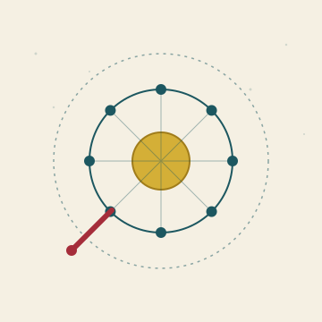

Het Open Vizier · Edição Pesquisa
Um jornal sobre pensar sem viseiras

★ PESQUISA
Nem todos os pensamentos têm lugar numa edição. Algumas perguntas ainda estão em aberto: hipóteses, planos, medições. Aqui estão elas sobre a mesa — não como uma história encerrada, mas como um convite a pensar em conjunto, a corrigir, ou a construir você mesmo.
★ I · NEUROFISIOLOGIA · COMPLETO
O plano de investigação completo com quadro conceptual, validação da literatura, cinco perguntas de investigação, modelo de processo em quatro fases, análise de deteção de erros, hipótese física (ondas gravitacionais humanas), três conceitos de detetores e cinco fases de seguimento.
Leia o plano completo →★ I · NEUROFISIOLOGIA · BREVE
A linha principal do plano de investigação em forma resumida: tese, modelo de processo, deteção de erros e a hipótese física numa única leitura.
Leia a versão breve →★ II · ROTEIRO
O roteiro de trabalho para investigação de seguimento: 24 questões de acompanhamento divididas em 8 fases — dos conceitos, através da arquitetura cerebral, até à primeira medição.
Veja o roteiro →★ III · BRIEFING JORNALÍSTICA
Briefing jornalística com posicionamento em três camadas (sustentado · modelação · especulativo), ângulos, escolhas de título e parágrafo de abertura. Para um colega que queira abordar o tema.
Leia a briefing →★ IV · WHITEPAPER I&D
Três horizontes de processamento de energia a partir de biomassa — 2050, 2075, 2125. Membranas, catalisadores, máquinas moleculares e fotossíntese artificial até ao limite termodinâmico. Publicado na Edição Europa.
Leia o whitepaper →